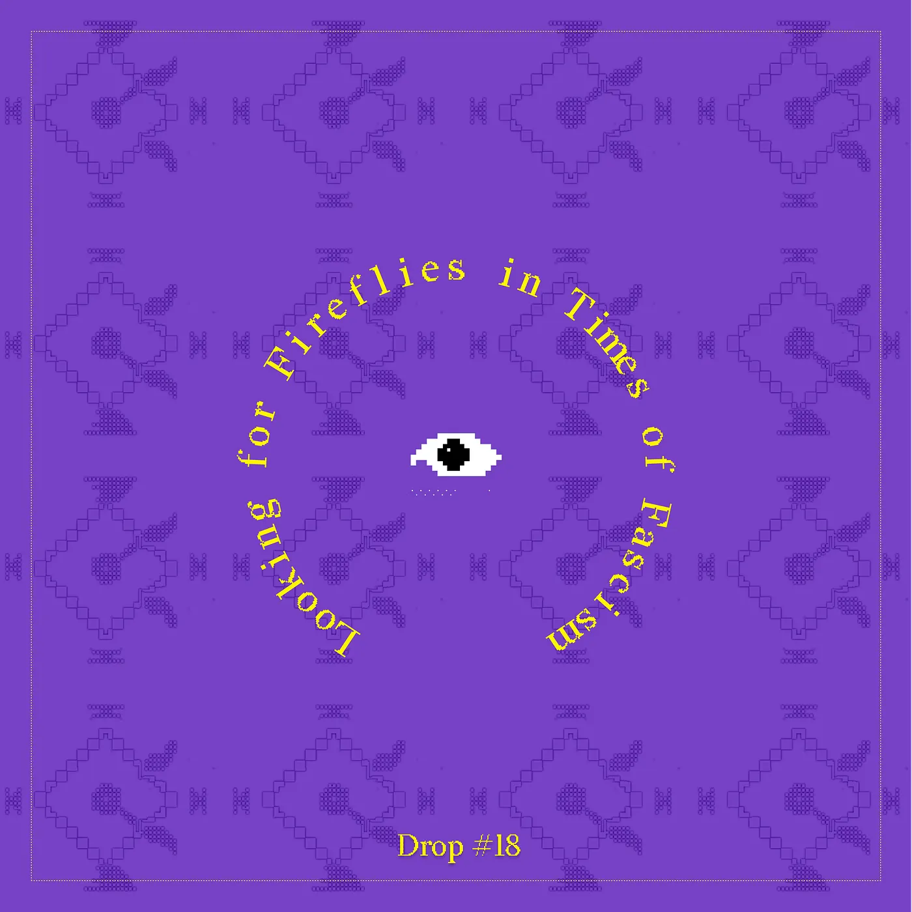
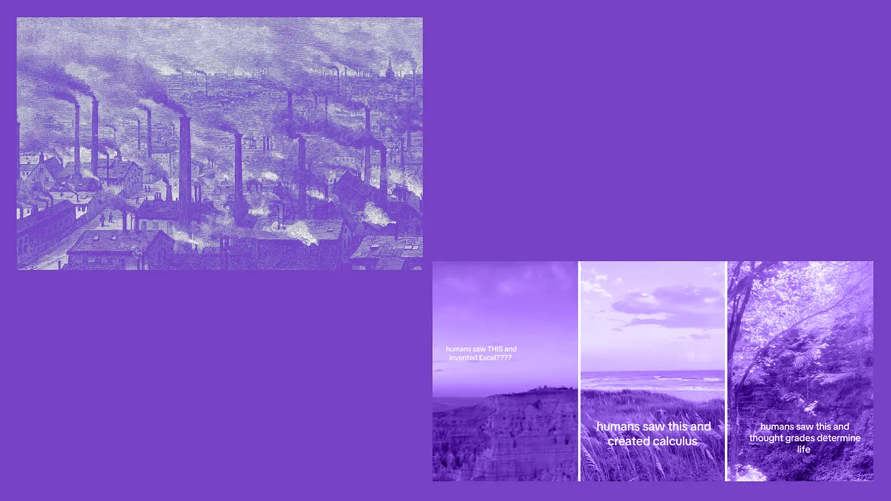
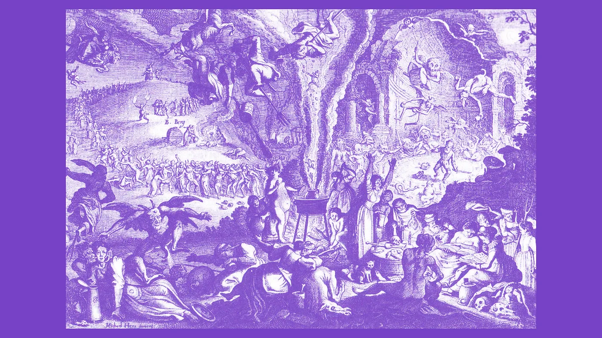
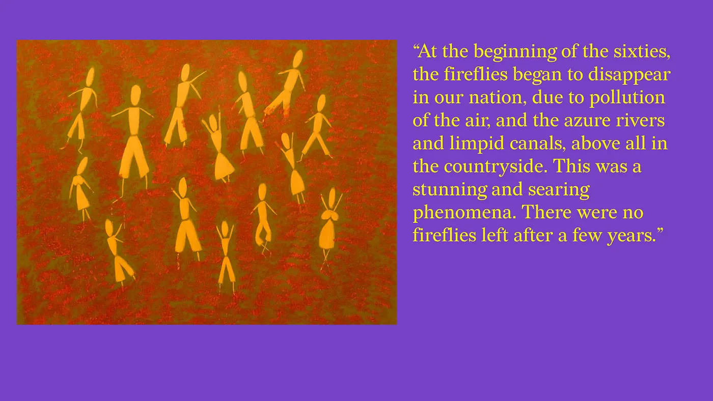
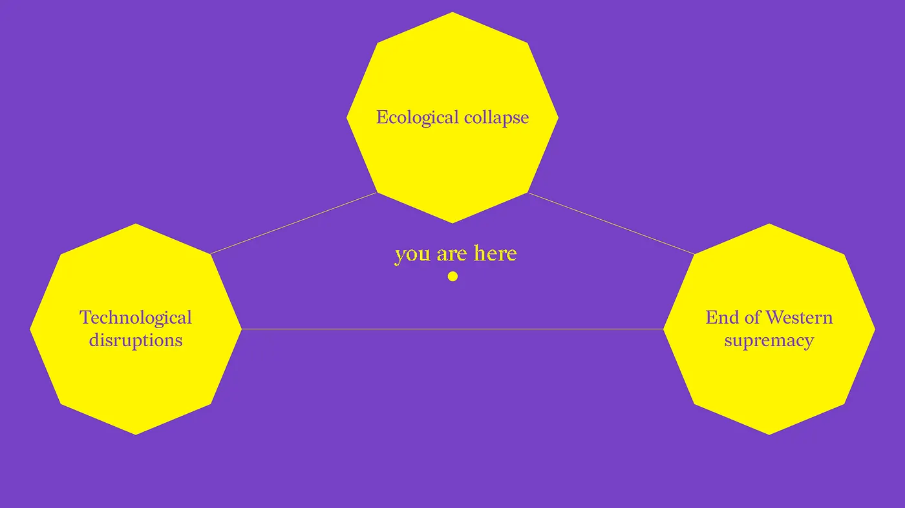
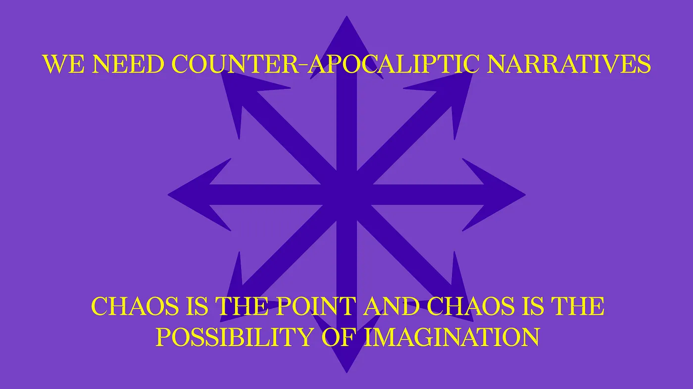

Drop #18 · October 21, 2024 · 8 min read
A brief journey through the ruins of modernity
Hey everyone (▰˘◡˘▰)
Welcome back to Drops, REINCANTAMENTO’s newsletter. On Saturday, October 12th, our collective’s work was featured on the opening night of “Casting A Spell in Computational Regimes” an exhibition curated by Arianna Forte at Somos Gallery, in Berlin.
Alessandro presented a brief journey through the ruins of modernity and a utopian effort to restore glimpses of hope and light. Speaking in what appear to be catastrophic times, he contextualized REINCANTAMENTO’s work, suggesting softly embracing the chaos and starting to imagine and manifest different realities.
Today’s DROP shares this intervention which reflects and resonates with the Berlin context in which we operate daily - and everything we do as REINCANTAMENTO. It feels like both a recap and a beginning, a necessary act of positioning. Hope you will enjoy it.
REINCANTAMENTO is sustained by voluntary work. If you like what we do, consider donating or subscribing to support our work ^_^

My talk today will briefly explore the concept of re-enchantment—a guiding light in both my philosophical research and the practice of my collective.
To explain the concept of re-enchantment, we usually begin by discussing its opposite. In 1919, Max Weber diagnosed our world as disenchanted. According to Weber and his interpreters, the advancement of scientific rationality and technological progress stripped away the magic dimension of reality.
Before modernity, humanity connected with the world through not only rational means but also myths, religions, folk stories, and spiritual experiences. These ways of interacting with the world once gifted reality with meaning, a sense of mystery, and wonder. However, with the scientific explanation of many phenomena—like thunder, for example—everything gradually became knowable and predictable, leading to the metaphor of the universe as a gigantic mechanism.

This process, Weber argued, led to a general impoverishment of the way we interact with the world. Without these stories and spiritual connections, we drastically reduced the range of our possible experiences, prioritizing utilitarian and economic reasoning. A key example is the human-nature relationship. Nature transformed into something to be dominated from the outside, often through technical means, rather than something we are intrinsically part of. Carolyn Merchant’s *The Death of Nature* explores this dynamic.
The hegemony of technical and scientific knowledge, while certainly effective, often created a separation from what Husserl called the Lebenswelt, the world of life. This separation empowered the white man to establish a relationship of mastery over the world around him, prioritizing his own utility over the well-being of the many life forms that inhabit our planet. Major anthropic interventions in nature—such as oil drilling—have predominantly served human beings to the detriment of other forms of life. Even worse, this has often been done with short-term profit in mind, preventing us from thinking about the future. Technology has locked us into a metaphysics of the present.
This disenchantment has not only affected our relationship with nature but also institutions like universities. Once centers of intellectual and spiritual exploration, universities are now driven by economic imperatives, reducing knowledge to its instrumental value—only wanting to teach what is "useful."
However, disenchantment is not just a spiritual condition but a material process as well. The so-called magical knowledge that was lost with modernity belonged to marginalized groups. One clear example, as Silvia Federici famously argued, is the witch hunts. These weren’t acts of religious fanaticism but deliberate strategies to control women’s reproductive labor and undermine communal ways of life. They also served to control knowledge, as witches were the experts in disciplines like herbalism and gynecology, the true holders of medical knowledge at the time. This was not acceptable to the emerging capitalist order, which needed women enclosed within the nuclear family.
Witch trials didn’t only target women. The Italian Marxist, Luciano Parinetto, whose work has unfortunately been overlooked, shed light on the brutal violence against various forms of diversity—homosexuals, nomadic populations like the Romani, and even alchemists. These outcasts embodied alternative ways of living and qualitative forms of knowledge. In the Basque countries, for example, the largest witch hunt occurred between 1609 and 1614, ordered by the King of France. Parinetto read these events as a patriarchal-capitalist crusade against the people of Labourd territory, who practiced a subsistence economy that opposed the emerging Calvinist ethic of accumulation.
The Church persecuted alchemists because they sought utopia in this world rather than waiting for the afterlife. They imagined a world of what we might now call post-scarcity, where abundance was shared. Their qualitative knowledge held emancipatory potential but was deemed unscientific and lost to history.
All these massacres, of course, began with the genocide of Native populations in the Americas. The comparison of marginalized European people to Native populations facilitated their dehumanization and eventual slaughter. The genocidal practices always come back home like a macabre boomerang: a warning for our present. However, in the final pages of La Traversata delle Streghe, Parinetto also illuminates the forms of dissent and solidarity that existed during that period:
Only by recognizing the different in the human can we avoid its brutal suppression and, at the same time, point to the men who caused something inhuman that only the human can place, endure, and perhaps remove.We have proof—in the Huguenots and in Montaigne—that even at the time of the Conquest of the New World (and of its Christian and monstrous massacres), there were men capable of discerning, of recognizing not only the human, but the veil of ideology: there is no general mentality (as some historians still today consider), capable of validating innocent crimes, also because there is no single mentality, but a stratification of different mentalités, which the authentic philosopher, the marginal, the different, the minorities, are able to disassociate themselves from, pointing out unilateralism and avoiding/denouncing the errors. Unfortunately, even today, often at the cost of personal suffering. Because even today, Power, to eliminate opposition and dissent, willingly names it as the devil, even if using more suitable substitute terms for today.
The elimination of these communities and the knowledge they embodied is the root of the disenchantment of the world—a primitive act of violence that established capitalist societies. Yet, never was the chorus of voices entirely silenced. To speak one's difference, to resist the siren call of hegemony, is forever a defiant act feared by Power. This echoes powerfully with the events unfolding on the streets of Berlin each week over the past year.

This process of disenchantment implanted scarcity—both cultural and economic—making everyone dependent on the sovereign power of the state, which fueled the expansion of capitalism. Everything common, free, and plural was either converted into privatized, regulated resources or erased.
Fast forward to 1975. Nine months before his death, the Italian poet Pier Paolo Pasolini wrote about the disappearance of fireflies in the Italian countryside due to pollution and industrial expansion. For Pasolini, fireflies became a symbol of a disenchanted reality, a vanished emblem of wonder.

In his essay The Power Void in Italy, Pasolini also talked about fascism and the continuity between the Italian fascist regime and the corrupt reign of the Christian Democratic Party. He argued that power dynamics did not change with different types of government—whether authoritarian or democratic, capitalist expansion continued unchecked, contributing to the disenchantment of reality.
Pasolini’s reflections bring us to an apocalyptic mood, but we must ask: have all the fireflies truly disappeared? These visions are apocalyptic in the literal sense—they are stories of worlds ending and fading away. They resonate with our present, where the sense of apocalypse feels generalized. Many of us believe we are witnessing the decline of a civilization that began with the genocide of Indigenous people and trials against witches.
This feeling of loss and confusion is due to the intersection of technological disruption, ecological collapse, and the end of Western supremacy—what has been described as a Polycrisis. It’s easy to succumb to apocalyptic defeat, but what we need are counter-apocalyptic practices.

At REINCANTAMENTO, our collective explores re-enchantment and situates our work within this conceptual framework. Re-enchantment is not a denial of scientific advancement or a call to return to pre-modern times. Rather, it means changing our gaze on reality—looking at things differently, obliquely. It means reigniting that sense of wonder and surprise that originally moved the arts and philosophy.
By embracing the dark, surreal era we live in, we realize that reality is not only shaped by rational forces but also by mysterious and unexpected patterns. As Trevor Paglen once said: "Chaos is the point, and chaos is the possibility of imagination."

Our work as a collective revolves around imaginative practices. We imagine new approaches to digital technologies—like the works in this exhibition show—not to become passive, and disconnected from reality, but to enhance our connection with it. Through empathy and imaginative practices, we can visualize how different futures may come to be. By expanding our perception and connection to the lives around us, we may once again see the fireflies and build a new politics for the future through that re-enchanted lens.